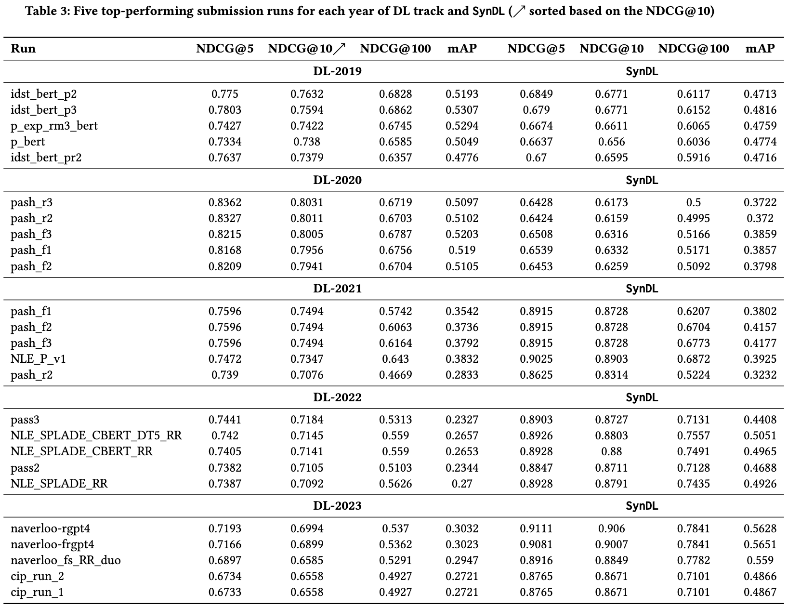

Self-RAG learns to retrieve, generate and critique to enhance LM's output quality and factuality, outperforming ChatGPT and retrieval-augmented LLama2 Chat on six tasks.

The issue: Factual inaccuracies of versatile LLMs
Despite their remarkable capabilities, large language models (LLMs) often produce responses containing factual inaccuracies due to their sole reliance on the parametric knowledge they encapsulate.
They often generate hallucinations, especially in long-tail, their knowledge gets obsolete, and lacks attribution.
Is Retrieval-Augmented Generation a silver bullet?
Retrieval-Augmented Generation (RAG), an ad hoc approach that augments LMs with retrieval of relevant knowledge, decreases such issues and shows effectiveness in knowledge-intensive tasks such as QA.
However, indiscriminately retrieving and incorporating a fixed number of retrieved passages, regardless of whether retrieval is necessary, or passages are relevant, diminishes LM versatility or can lead to unhelpful response generation. Moreover, there's no guarantee that generations are entailed by cited evidence.
What is Self-RAG?
Self-Reflective Retrieval-Augmented Generation (Self-RAG) is a new framework to enhances an LM's quality and factuality through retrieval and self-reflection.
Our framework trains a single arbitrary LM that adaptively retrieves passages on-demand (e.g., can retrieve multiple times during generation, or completely skip retrieval), and generates and reflects on retrieved passages and its own generations using special tokens, called reflection tokens.
Generating reflection tokens makes the LM controllable during the inference phase, enabling it to tailor its behavior to diverse task requirements.
How good is Self-RAG?
Experiments show that Self-RAG (7B and 13B parameters) significantly outperforms state-of-the-art LLMs and retrieval-augmented models on a diverse set of tasks.
Specifically, Self-RAG outperforms ChatGPT and retrieval-augmented Llama2-chat on Open-domain QA, reasoning and fact verification tasks, and it shows significant gains in improving factuality and citation accuracy for long-form generations relative to these models.
Self-RAG is a new framework that trains and controls an arbitrary LM through Self-reflection tokens. In particular, at every segment (e.g., sentence), Self-RAG can

Self-RAG training consists of three models, a Retriever, a Critic and a Generator.
1. Trains the Critic and augment diverse instruction-output data with retrieved passages by the Retriever as well as reflection tokens (See Figure below).
2. Train the Generator LM using a standard next token prediction objective to learns to generate natural continuations as well as special tokens to retrieve or critique its own generations.

By learning to generate reflection tokens, Self-RAG enables to tailor model behaviors for diverse downstream tasks or preferences, without requiring training LMs. In particular,
Self-RAG outperforms vanilla ChatGPT or LLama2-chat across six tasks, and outperforms those SOTA models with widely-used retrieval-augmentation methods in most tasks by large margin.

Our ablation results show that all training and inference components play important roles to improve performance off Self-RAG.
Self-RAG enables practitioners to tailor model's behaviors for different fine-grained preferences. For instance, putting more emphasis on whether a model generation is supported by the evidence can increase citation precision (precision in Figure (b)) on long-form generation, while putting less emphasis on it can increase the output fluency as a model may generate output more flexibly and fluently, regardless of whether it is supported by the cite evidence.
Self-RAGgenerates retrieval tokens by itself when it judges retrieval is necessary, while one can also increase or decrease retrieval frequency based on diverse end tasks. As you can see, retrieval less can hurt performance on Open domain QA (PopQA; 40% relative performance drop) while it gives marginal performance deterioration in fact verification task (PubHealth; 2%).
@article{asai2023selfrag,
author = {Asai, Akari and Wu, Zeqiu and Wang, Yizhong and Sil, Avirup and Hajishirzi, Hannaneh},
title = {{Self-RAG}: Learning to Retrieve, Generate, and Critique through Self-Reflection},
year = {2023},
journal = {arXiv preprint arXiv:2310.11511},
url = {https://arxiv.org/abs/2310.11511}
}